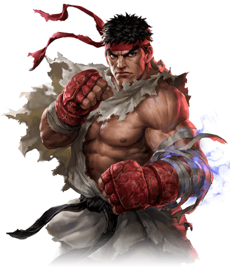

Experience
- 2018 Amongst many fighters of the past was featured in the movie "Ready Player One". Ryu ready always!
- 2017 United with unknown until then to me Power Rangers to defea resurrected M.Bison.Damn good fighters they are, even not knowing karate ways!
- 2016 In "Street Fighter V" once and for all erased M.Bison from earth and tamed my inner Evil Ryu. Also spent some time on a side-project, mini-series "Street Fighter: Resurrection".
- 2014 Filmed in a martial arts tutorial "Street Fighter: Assassin's Fist", revealing to audience forgotten art of Ansatsuken.
- 2012 The gods of intenet concluded me in the animated movie "Wreck-It Ralph", but rewarded me with a good drink for it!
- 2008 My evil alter ego sneaked out of control and became a boss in "Street Fighter IV".
- 2006 Borrowed my famous ripped gi to Soki in "Onimusha: Dawn of Dreams", gods informed me he needed that for the battle.
- 1998 Defeated M. Bison in "Street Fighter Alpha 2", bastard wanted to use my heroic body for his evil intentions, but retreated with shame. Also this year I encountered Marvel universe in "Marvel vs. Capcom: Clash of Super Heroes" fighter,loyal to my employer, Capcom, of course.
- 1997 Reunited with Ken, my friend and opponent in "Street Fighter III". Men's friendship works mysteriously. Also helped with Arika project "Street Fighter EX"
- 1996 Took care of villainous Akuma in "Street Fighter Alpha 2". As a freelance on "Super Puzzle Fighter II Turbo" tried myself in a new genre, puzzle games. Let the wrath of seven heavens come upon these malicious enigmas, never again!
- 1995 Kept fighting in "Street Fighter Alpha: Warriors' Dreams".
- 1994 Screened in a movie "Street Fighter", so that the batllesof past would not be forgotten by millenial generation.
- 1991 Was promoted to "Street Fighter II". Didn't stay there for long, celebrations and office dwelling is not for me!
- 1987 Started working for Capcom project "Street Fighter". My partner was Ken Masters, the boss'name was Sagat.
Publications
- 2011 The true and humble story of me under pseudonim Tyler Wilde in an article "The evolution of Ken and Ryu"
- 2003-2018 For 15 years I have published comic books with Udon Entertainment depicting my adventures, bitter lessons and great victories.
Achievements
- #1 in "Top 25 Street Fighter Characters" by IGN, who also called me "fancy", "icon" and "a testament to the virtue of simplicity"
- #2 in "Top 20 Street Fighter Characters of All Time" by GameDaily, same council found me worth of #6 place in "Top 25 Capcom Characters of All Time", which I proudly share with my partner Ken
- I was named "5th Most Powerful Street Fighter Character" by Screen Rant-san
- #71 in "Top 100 Heroes of All Time" by UGO Networks, also recognized #2 in their list of "Top 50 Street Fighter Characters"
- In a survey of 4000 online matches for Super Street Fighter IV, I got to be the most popular character, with 16.6% of players choosing my side
Life & Education
To live is to fight and to fight is to live. I started learning fighting at my master Gouken's castle, I was beaten at head way too often to remember when exactly.
Languages
- English
- Mandarin
- Japanese
Skills
Karate energy attack shoryuken walking barefoot playing videogames doing burgers mashing potatoes copywriting acting voiceovers
Character
Noble direct bold confident daring schizophrenic dramatic persuasive immediate wise
Life lesson
You must defeat Sheng Long to stand a chance.
Likes
Gi vegetables blood small marshmellows red color killed enemy
Dislikes
Bisons ghosts smartphones smell of seafood barber shops sleeves
Wants
Be fit write more books find a girlfriend to go to cinema with kill all of akuma family